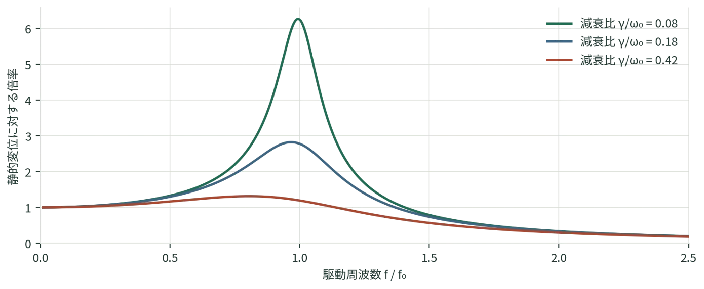

第11章 振動・共鳴・部屋
楽器を一つの物体として扱うと何が失われるか
弦を指ではじくと、弦の変位が駒を動かし、駒が胴を駆動し、胴の面が空気へ音を放射する。耳に届く振幅は弦の変位だけからは決まらない。弦と胴と空気の間でエネルギーが伝わり、各段の共振が音色を形づくる。リード楽器では管の共鳴が振動するリードへ戻り、吹奏系は単に「外から指定した周波数を管で増強する」モデルより複雑になる。音源の開始と維持、共鳴、放射を別々に測るだけでも、楽器比較が具体的になる。 OpenStax S08 · UNSW 楽器音響 S37
減衰振動と強制振動の模型
質量 の変位を 、ばね定数を 、粘性抵抗係数を 、外力を とする。力の向きは運動や変位に逆らうため、運動方程式は 固有角周波数 、減衰率 。 で を代入すると、。 なら根は 。従って包絡 と減衰角周波数 を得る。時間定数 の時点では振幅は初期値の 。楽器の減衰に複数の時間定数が現れる場合、単一のモードの式だけでは近似の限界がある。
命題（定常強制振動の伝達関数）。 外力を とすると、粘性抵抗をもつ系の定常変位の複素振幅 は
証明。 を代入する。1階微分で 、2階微分で を掛ける。全項の共通因子 を除き、 について解く。自由振動成分は で減衰する。従って時間が十分に経ったとき、この周期応答が残る。∎
振幅の最大位置は分母の二乗 の最小位置。 で微分した式をゼロと置くと、内部に最大がある場合は 。変位共鳴の山と自由振動の周波数は、減衰が小さいと近い。共振曲線が鋭いと、少し周波数を外しただけで出力が小さくなる。第40章のRC低域通過は一次系であり、ここでの鋭いピークは主として二次の運動方程式の性質に由来する。

壁と距離が音を変える
自由空間中の等方点音源で吸収を無視すれば、出力 は半径 の球面 を通るので 。距離の倍化で強度は 、レベルは約−6 dB。室内では反射が加わり、この単純な距離則から外れる。直達音と強い初期反射を一つのマイクで合成すると、到着時間差の逆数を間隔とする櫛形の応答が表れうる。話し手とマイクの位置を数十センチ変えるだけで、音色が変わる原因の一つである。
長さ の平行壁間を一次元と近似し、硬い壁で圧力の勾配がゼロとすれば、モードの波長は 。、 なら最初は約42.9 Hz。三次元の直方体近似では である。 は各方向の長さ、 は整数で、すべて0の場合を除く。各方向に余弦の固有関数をとり、ラプラシアンを作用させると空間固有値が三方向の二乗和になることから導ける。壁の吸音、開口、家具がある部屋では、測定値にずれが生じる。
測定。 自由に持ち運べる音源で長さ4 m前後の部屋の低域を調べる。壁際と部屋の中央で録音して比較する場合、再生音量・音源位置・マイクの設定を固定する。スマートフォンの録音には自動利得や帯域制約があるので、装置の仕様が不明なら得られたdB値を校正した音圧として扱わない。